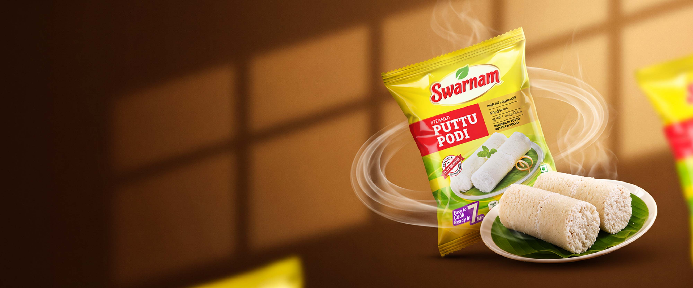

A beloved breakfast favourite in Kerala, puttu is a timeless combination of taste, tradition and simplicity. Swarnam Steamed Puttu Podi brings the goodness of this traditional dish to your kitchen with convenience and quality. Carefully prepared for easy cooking, it helps you create soft, fluffy and delicious puttu to enjoy with your favourite accompaniments. A simple way to bring the authentic taste of Kerala to your breakfast table.

Perfect for preparing soft and fluffy Kerala-style puttu, a favourite breakfast enjoyed across generations.
Pairs beautifully with traditional kadala curry, creating one of Kerala's most loved breakfast combinations.
Enjoy it with ripe bananas, sugar and grated coconut for a simple and delicious traditional combination.
Can also be used to prepare different variations of puttu with ingredients such as grated coconut, vegetables and other flavourful additions.
Carefully processed and steamed, making it convenient for preparing traditional puttu at home.
Helps bring the familiar taste of Kerala's much-loved breakfast tradition to everyday meals.
Enjoy with a variety of accompaniments, from kadala curry and banana to savoury and sweet preparations.
Makes it easy to prepare a wholesome traditional breakfast using simple ingredients and familiar cooking methods.
Puttu podi is traditionally made from rice that is processed into a fine or coarse flour suitable for preparing puttu.
Steamed puttu podi is rice flour that has undergone a steaming process as part of its preparation, making it suitable for preparing traditional puttu.
Add water and salt gradually to the puttu podi and mix until it reaches a moist, crumbly consistency. Allow it to rest for around 20 minutes. Layer the mixture with grated coconut in a puttu maker and steam for approximately 7 minutes or until cooked.
Puttu can be enjoyed with kadala curry, ripe banana, sugar, grated coconut, green gram curry and a variety of other accompaniments.
Store it in an airtight container in a cool, dry place, away from moisture and direct sunlight. Always use a dry spoon when handling the flour.